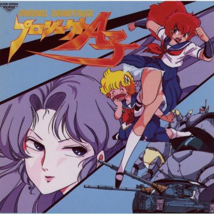

Project A-ko

From the Anime Pocket Guide:
Cast:
A-Ko Magami ................................... Miki Itou
B-Ko Daitokuji ............................ Emi Shinohara
C-Ko Kotobuki ........................... Michie Tomizawa
Ume .................................. Megumi Hayashibara
Ine .................................... Yoshino Takamori
Mari ...................................... Daisuke Gohri
Captain Napolipolita ..................... Shuuichi Ikeda
Spy-D ...................................... Tessho Genda
Kei-kun .................................... Tessho Genda
Defense Minister ............................. Tamio Ohki
B-Ko's father ......................... Yoshitada Ohtsuka
Kei's mother (Part 4) ..................... Reiko Mutoh
Asa (Part 4) ...................... Youko Ogai
Raiza Chichi (A-Ko the Vs) .............. Saeko Shimazu
C-ko's father (A-Ko the Vs) ................. Osamu Saka
Maruten (A-Ko the Vs) ............. Masami Kikuchi
Gail (A-Ko the Vs) ................. Sho Hayami
Gail (little) (A-Ko the Vs) ............ Minami Takayama
C-ko's servant (A-Ko the Vs) ............ Minami Takayama
Grash .................................. Hiroshi Takemura
Mari ..................................... Sayuri Ikemoto
mother (Kanketsuhen) ..................... Sumi Shimamoto
Description:
Take a school classroom. Add one poetry spouting teacher. Add
a brilliant student (B-Ko). Add two new students, one who can
destroy whole armies with her strength and another who can
destroy whole armies with her crying and cooking. Now, create
a rivalry between A-Ko and B-ko over getting to be C-Ko's friend.
Add an invading alien force and you've got a parody taking aim
at many anime cliches. Overall, it was very funny, though some
parts were better than others. "A-Ko the Versus" placed A-Ko and
B-Ko as bounty hunters trying to rescue C-Ko.
Other Resources
Anime Video Game Resource Center © 1998 by Luis A. Cruz